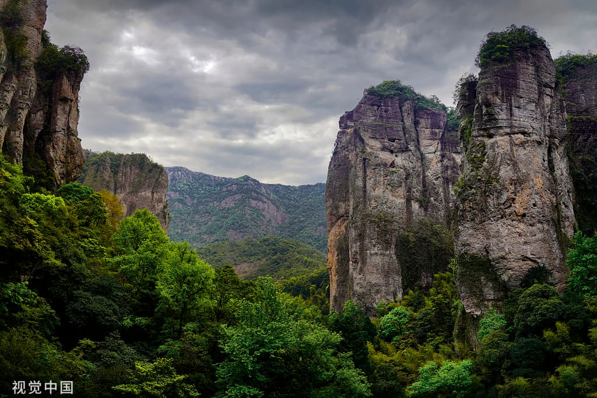
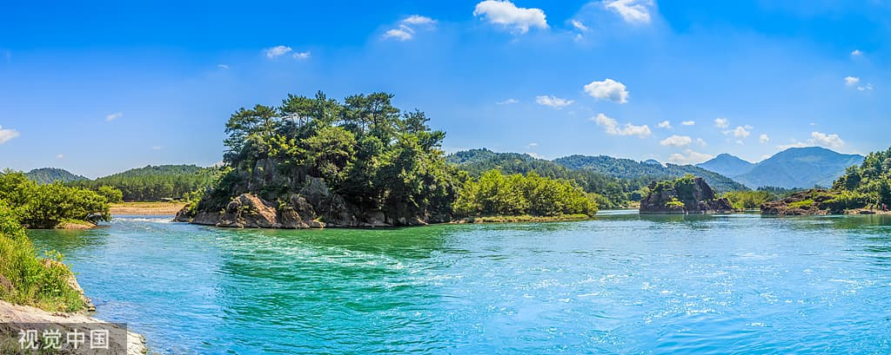
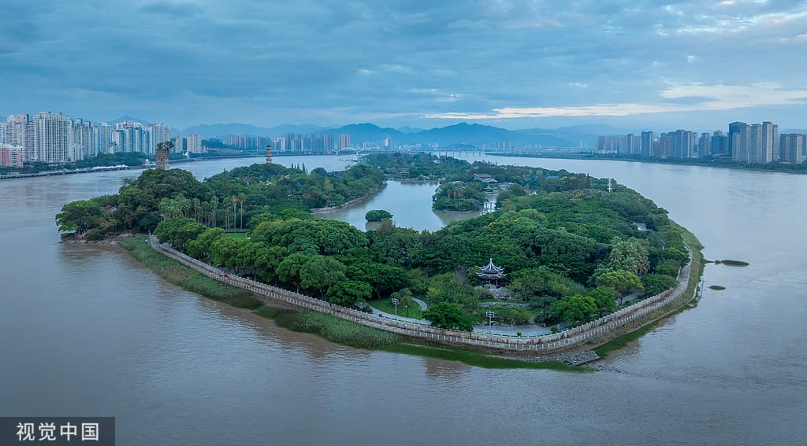
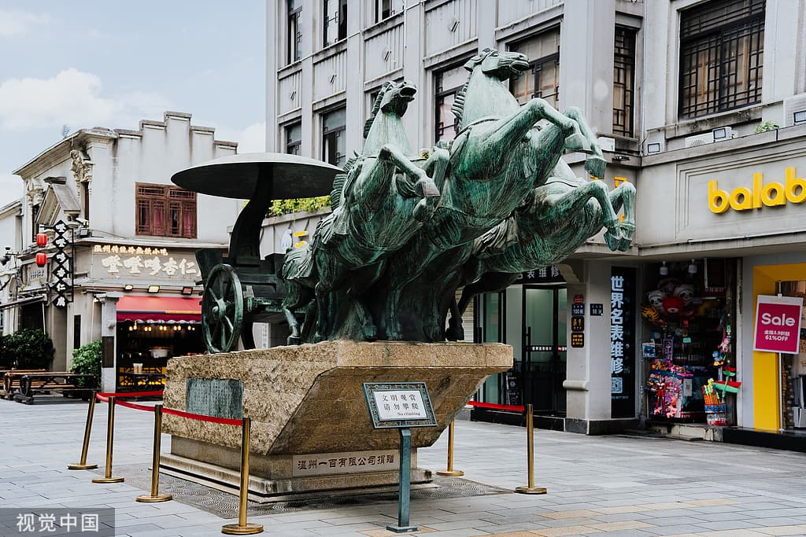
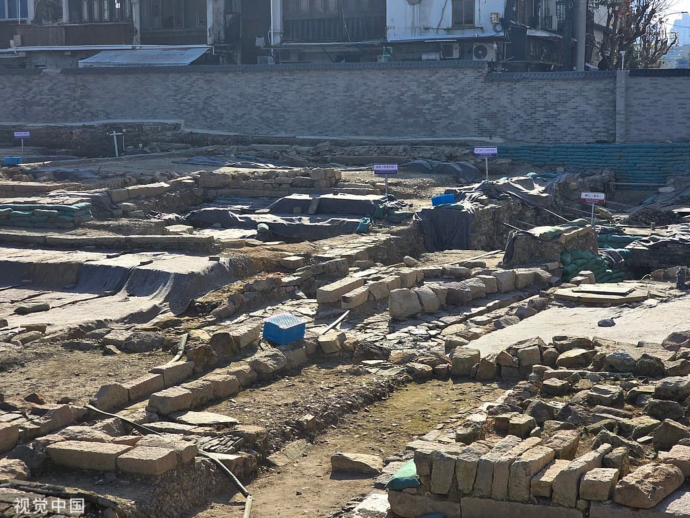
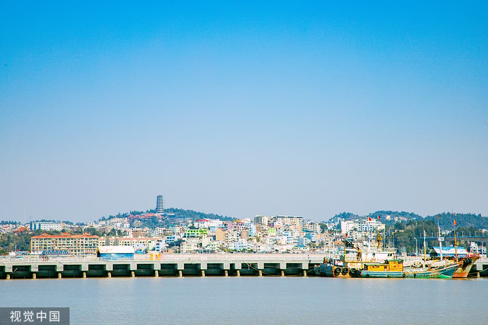

Must-See Spots
Mountains, river, sea, and city — how to choose in two days
Yandang Mountain · Strange peaks and night views

Suggested time: Half day – 1 day
Transport: 30 min by train from Wenzhou South to Yandangshan Station (25 RMB)
Tip: The Lingfeng night view requires a separate ticket. Enter in the afternoon for the best value.
Nanxi River · Bamboo rafting and ancient villages

Suggested time: Half day
Transport: Chartered car or self-drive, about 1 hour from downtown
Tip: Raft in the morning; Lishui Street is best for photos in the late afternoon.
Jiangxin Island · Twin pagodas in the river

Suggested time: 2–3 hours
Transport: Take the ferry from downtown
Tip: In 2026, show your flight or high-speed rail ticket arriving within 7 days to get free first-entry tickets.
Wuma Street / Shamao River · Old streets, snacks, Republic-era buildings

Suggested time: 2–3 hours
Transport: Walk or take a bus downtown
Tip: It is livelier at night. Try dengzhan gao and fish ball soup while walking.
Shuomen Ancient Port · Song Dynasty street and archaeological site

Suggested time: 1–2 hours
Transport: Right next to Wuma Street, within walking distance
Tip: Go in the late afternoon, then have dinner by the river.
Dongtou · Island sunset and Wanghai Tower

Suggested time: 1 day (optional)
Transport: Self-drive or bus, about 1.5 hours from downtown
Tip: If you only have two days, save Dongtou for next time.